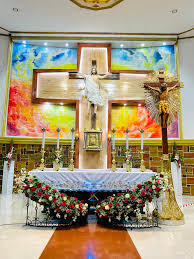

Tourism in Buug
Tourist Attractions

Buug Municipal Plaza
A beautifully landscaped park in the heart of the municipality, perfect for relaxation and community events.
Poblacion, Buug
Open daily

Our Mother of Perpetual Help Parish-Buug
A historic catholic church known for its beautiful architecture and religious significance.
Poblacion, Buug
Mass schedules available

Sibugay Bay Coastal Areas
Pristine beaches (Silupadal Beach Resort) and mangrove forests along the coast, ideal for eco-tourism.
Coastal barangays
Best visited during low tide

Hidden Falls
A hidden waterfall in the mountains (Busay), perfect for adventure seekers and nature lovers.
Barangay Langug
Guided tours recommended
Festivals and Events
Buug Foundation Day
Celebrated every June 21st with parades, cultural shows, and community activities.
Fiesta Señor
Religious festival honoring St. Vincent Ferrer every April.
Subanen Festival
Celebration of indigenous culture featuring traditional dances and crafts.